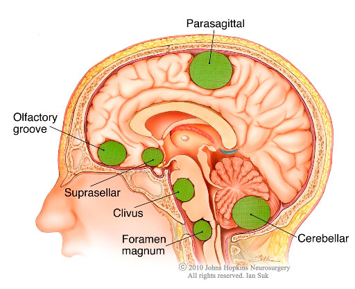

Glioma

About: Gliomas are brain tumors arising from glial cells, which support and protect neurons.
They can be classified by cell type (astrocytoma, oligodendroglioma, ependymoma) and grade (low-grade to high-grade).
Symptoms often include persistent headaches, seizures, changes in personality or memory, and possible motor/speech difficulties.
Risk Factors & Diagnosis:
- Genetic predispositions (e.g., Neurofibromatosis, Li-Fraumeni syndrome).
- Exposure to high-dose radiation can slightly increase risk.
- Diagnosis typically involves MRI/CT scans, neurological exams, and biopsy.
Treatment & Management:
- Surgery to remove or debulk the tumor if safely possible.
- Radiation therapy and/or chemotherapy, depending on tumor grade.
- Supportive care: anticonvulsants for seizures, steroids for swelling.
Do's & Don'ts:
- DO attend regular follow-ups to monitor tumor progression or recurrence.
- DO maintain a nutrient-rich diet and moderate physical activity, as tolerated.
- DON’T ignore new or worsening neurological symptoms; contact your care team immediately.
Yoga/Exercise/Meditation Links:
References: American Brain Tumor Association, National Cancer Institute
Disclaimer: This content is for educational purposes only. Consult your healthcare provider for personalized advice.
Recommended Doctor: Dr. Pankaj Ashok Agarwal (Neurologist)
Meningioma

About: Meningiomas originate in the meninges—the protective layers of the brain and spinal cord.
While many are benign, they can still grow large and press on brain tissue, causing headaches, seizures, or neurological deficits.
Some meningiomas can be atypical or malignant, requiring more aggressive treatment.
Symptoms & Diagnosis:
- Headaches, vision changes, hearing loss, or weakness in limbs.
- MRI or CT scans help locate and characterize the tumor.
- Biopsy or surgical resection confirms diagnosis and tumor grade.
Treatment & Management:
- Observation for small, asymptomatic tumors.
- Surgery or radiation therapy for symptomatic or growing meningiomas.
- Rehabilitation (physical/occupational therapy) if needed post-surgery.
Do's & Don'ts:
- DO get regular imaging follow-ups to track tumor size if not removed.
- DO adopt a healthy lifestyle—balanced diet, moderate exercise, stress management.
- DON’T ignore persistent headaches or neurological changes; consult your physician.
Yoga/Exercise/Meditation Links:
References: Mayo Clinic, Brain Science Foundation
Disclaimer: This content is for educational purposes only. Consult your healthcare provider for personalized advice.
Recommended Doctor: Dr. Pankaj Ashok Agarwal (Neurologist)
Pituitary Tumors
About: Pituitary tumors (adenomas) can affect hormone levels, leading to conditions like
Cushing’s disease (excess cortisol), acromegaly (excess growth hormone), or hyperprolactinemia.
They are often benign but can impact vision if they press on the optic chiasm.
Symptoms & Diagnosis:
- Headaches, vision changes, unexplained weight gain/loss, menstrual irregularities.
- Hormone blood tests, MRI scans, and ophthalmologic exams are common diagnostics.
Treatment & Management:
- Medication to balance hormone levels (e.g., bromocriptine for prolactinoma).
- Transsphenoidal surgery to remove larger or symptomatic tumors.
- Radiation therapy if surgery is not fully successful or feasible.
Do's & Don'ts:
- DO keep a journal of symptoms (mood changes, weight fluctuations) for doctor visits.
- DO follow hormone replacement therapy if prescribed post-surgery.
- DON’T skip follow-up appointments or discontinue medications abruptly.
Yoga/Exercise/Meditation Links:
References: Pituitary Network Association, Endocrine Society
Disclaimer: This content is for educational purposes only. Consult your healthcare provider for personalized advice.
Recommended Doctor: Dr. Pankaj Ashok Agarwal (Neurologist)
No Tumor (Normal Brain Scan)
About: A normal brain scan indicates no detectable lesions or growths. However, if neurological symptoms
persist—such as chronic headaches or unexplained changes in cognition—further investigations may be warranted
(e.g., blood tests, additional imaging, or specialist referrals).
General Brain Health Tips:
- Maintain a consistent sleep schedule to support cognitive function.
- Stay mentally active with puzzles, reading, or hobbies.
- Manage stress through mindfulness, therapy, or relaxation techniques.
Yoga/Exercise/Meditation Links:
References: Cleveland Clinic, WHO Brain Health Guidelines
Disclaimer: This content is for educational purposes only. Consult your healthcare provider for personalized advice.
Recommended Doctor: Dr. Pankaj Ashok Agarwal (Neurologist)